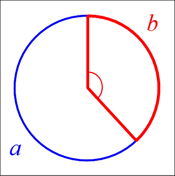

Patterns in nature
“The scientist does not study nature because it is useful; he studies it because he delights in it, and he delights in it because it is beautiful.” (Henri Poincaré)
There are many examples of natural facts that can be described in mathematical terms. Nice examples are the shape of snowflakes, the fractal geometry of romanesco broccoli or how self-similarity rules the growth of plants.
R is a tool for doing serious analysis, but not everything in life is serious. Life is also funny, and R can be used to have fun and to do beautiful things. Its graphical power can be used to produce artistic images like the one that illustrates this section, which is inspired by how plants arrange their leaves. This fact is called phyllotaxis and will serve as the basis of this article.
In this article, we are using the ggplot2 package. Apart from having fun, we will learn many important features of it that will be useful not only to do art but also to represent data in real-life problems. Let’s start by loading the library.
# Set plot images to a nice size
options(repr.plot.width = 4, repr.plot.height = 4)
# Load the ggplot2 package
library(ggplot2)
Warming up: drawing points on a circle
There are many ways to represent data with ggplot2: from simple scatter plots to more complex violin plots. The functions that start with geom_ define the type of plot. In this article, we will only work with geom_point() which plots points in two dimensions. We’ll need a dataset with two variables; let’s call them x and y.
We’ll start by drawing 50 points on a circle of radius 1. As every (x, y) point should be in the unit circle, it follows that x² + y² = 1. We can get this using the super famous Pythagorean trigonometric identity which states that sin²(θ) + cos²(θ) = 1 for any real number θ.
# Create circle data to plot
t <- seq(0, 2*pi, length.out = 50)
x <- sin(t)
y <- cos(t)
df <- data.frame(t, x, y)
# Make a scatter plot of points in a circle
p <- ggplot(df, aes(x, y))
p + geom_point()

Make it harmonious with the Golden Angle
Plants arrange their leaves in spirals. A spiral is a curve which starts from the origin and moves away from the origin as it revolves around it. In the plot above all our points are the same distance from the origin. A simple way to arrange them in a spiral is to multiply x and y by a factor which increases for each point. We could use t as that factor, as it meets these conditions, but we will do something more harmonious. We will use the Golden Angle:
Golden Angle = π(3 − √5)
This number is inspired by the Golden Ratio, one of the most famous numbers in the history of mathematics. Imagine that you have a circumference and you break up it into two arcs with lengths a and b, with a>b (an arc is a portion of the circumference). The angle that breaks the circle so that a/b=(a+b)/a is called the Golden Angle. In other words: the Golden Angle breaks up a circle so that the ratio of the big arc to the little arc is the Golden Ratio. This image (from Wikipedia) illustrates the previous definition:

The Golden Angle is the angle subtended by the smaller (red) arc. Both the Golden Ratio and the Golden Angle appear in unexpected places in nature. Apart of flower petals and plant leaves, you’ll find them in seed heads, pine cones, sunflower seeds, shells, spiral galaxies, hurricanes, etc.
It’s time to spiralize!
# Define the number of points
points <- 500
# Define the Golden Angle
angle <- pi*(3-sqrt(5))
t <- (1:points) * angle
x <- sin(t)
y <-cos(t)
df <- data.frame(t, x, y)
# Make a scatter plot of points in a spiral
p <- ggplot(df, aes(x*t, y*t))
p + geom_point()

Remove everything unnecessary
Apart from data, a plot includes many other components that define its final appearance. Our previous plot contains:
- a background filled with grey color
- a grid of horizontal and vertical white lines
- ticks along the axis
- a title on each axis
- text along axes to label marks
Art does not get along with most of these elements, so it’s time to move to action.
df <- data.frame(t, x, y)
# Make a scatter plot of points in a spiral and remove some plot components
p <- ggplot(df, aes(x*t, y*t))
p + geom_point() +
theme(panel.background = element_rect(fill="white"),
panel.grid = element_blank(),
axis.title = element_blank(),
axis.text = element_blank(),
axis.ticks = element_blank())

A bit of makeup: size, color and transparency
Our drawing is starting to look like a plant, but we can better. By changing color, transparency (also called alpha), and size of the points, the image will become more appealing.
# Change the code from Task 4 to modify the
# size, transparency, and color of the points
p <- ggplot(df, aes(x*t, y*t))
p + geom_point(size = 8, alpha = 0.5, color= "darkgreen")

Play with aesthetics: the dandelion
Until now, all points have the same appearance (size, color, shape, and alpha). Sometimes we will want to make the appearance of the points dependent on a variable in the dataset. Now we will make the size variable. We will also change the shape of the points. Although we won’t be able to blow on it, the resulting image should remind you of a dandelion.
# Copy the code from Task 5 and modify the
# color, size, and shape of the points
p <- ggplot(df, aes(x*t, y*t))
p + geom_point(aes(size = t), alpha = 0.5,
color= "darkgreen", shape = 8) +
theme(legend.position = "none")

Put all it together: the sunflower
Plants not only use the Golden Angle to arrange leaves. The Golden Angle is also found in the arrangement of sunflower seeds. We don’t need anything new to draw a sunflower; we just need to combine some of the things we already know.
# Copy the code from Task 6 and modify the color and
# shape of the points, and the background color
p <- ggplot(df, aes(x*t, y*t))
p + geom_point(aes(size = t), alpha = 0.5,
color= "yellow", shape = 17) +
theme(legend.position = "none",
panel.background = element_rect(fill = "darkmagenta"))

What if you modify the angle?
These patterns are very sensitive to the angle between the points that form the spiral. Small changes to the angle can generate very different images. Let’s look at an example of that.
# Change the value of the angle
angle <- 2.0
points <- 1000
t <- (1:points)*angle
x <- sin(t)
y <- cos(t)
df <- data.frame(t, x, y)
# Copy the plotting code from Task 7
p <- ggplot(df, aes(x*t, y*t))
p + geom_point(aes(size = t), alpha = 0.5,
color= "yellow", shape = 17) +
theme(legend.position = "none",
panel.background = element_rect(fill = "darkmagenta"))

All together now: imaginary flowers
The techniques we’ve used so far allow us to create an infinite number of patterns inspired by nature: the only limit is our imaginations. But making art has also been a fun excuse to learn to use ggplot2. All the tricks we have seen in this article are useful when plotting real data too.
The image below is a simple variation of the previous flower and is in essence very similar to the first figure in which we plotted 50 points in a circle. I hope you’ve enjoyed the journey between that simple circle and this beautiful flower. :smile:
# Change the values of angle and points
angle <- 13*pi/180
points <- 2000
t <- (1:points)*angle
x <- sin(t)
y <- cos(t)
df <- data.frame(t, x, y)
# Adjust the plot parameters to create the magenta flower
p <- ggplot(df, aes(x*t, y*t))
p + geom_point(size = 80, alpha = 0.1, shape = 1, color = "blue")+
theme(legend.position="none",
panel.background = element_rect(fill = "white"),
panel.grid=element_blank(),
axis.ticks=element_blank(),
axis.title=element_blank(),
axis.text=element_blank())